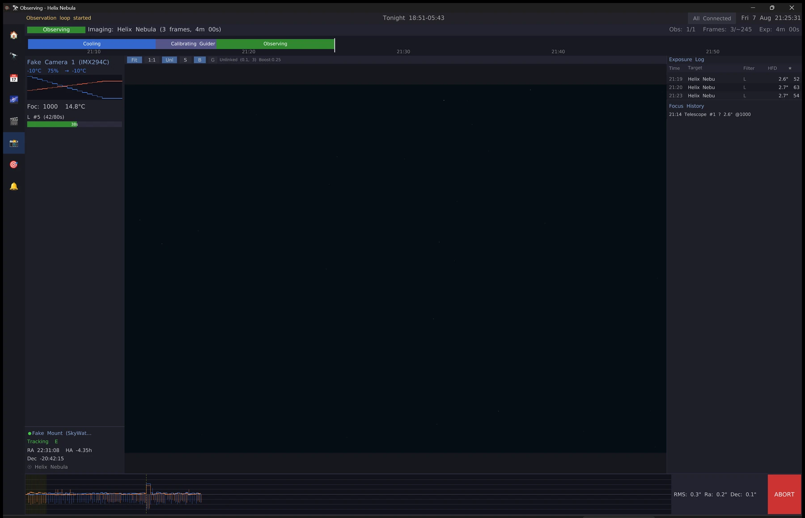

Automation
Point it at the sky and go to bed
Cool the camera to setpoint, find focus, calibrate the guider, slew, centre on a plate solve, dither, flip the meridian, refocus when the stars start to bloat, shoot flats at dawn, and park. One mount, as many optical trains as it carries.
Refocus triggers on a trend across the last 30 frames, not one bad exposure — a gust or passing haze cannot start a focus run. Backlash is inferred from every successful autofocus rather than measured separately.
